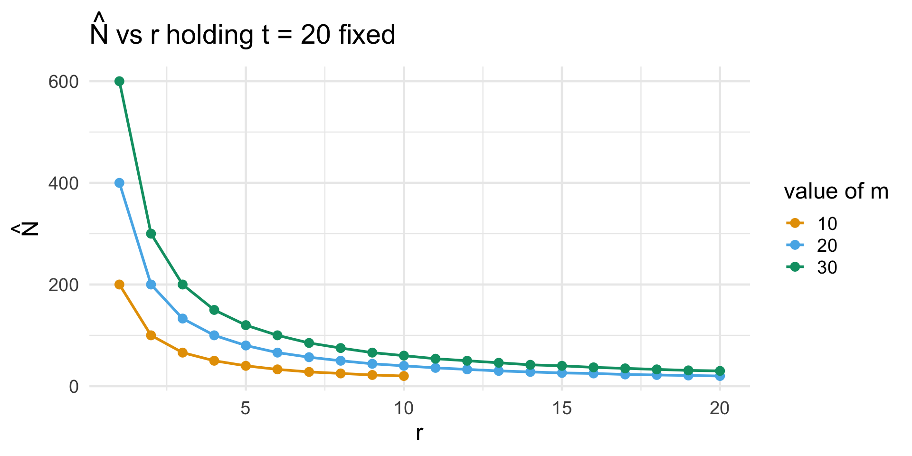

PSTAT 501: Microteaching
An Introduction to Capture-Recapture
Department of Statistics and Applied Probability; UCSB
Winter 2025
\[ \newcommand\R{\mathbb{R}} \newcommand{\N}{\mathbb{N}} \newcommand{\E}{\mathbb{E}} \newcommand{\Prob}{\mathbb{P}} \newcommand{\F}{\mathcal{F}} \newcommand{\1}{1\!\!1} \newcommand{\comp}[1]{#1^{\complement}} \newcommand{\Var}{\mathrm{Var}} \newcommand{\SD}{\mathrm{SD}} \newcommand{\vect}[1]{\vec{\boldsymbol{#1}}} \newcommand{\Cov}{\mathrm{Cov}} \usepackage[makeroom]{cancel} \]
Introduction
Leadup to Capture-Recapture
We’ve all heard the expression: “there are plenty of fish in the sea.”
But are there?
More specifically; how can we find the number of fish in a large lake?
One idea: drain the lake.
Of course, this is not a feasible solution! We need to be a bit more clever about how we do this. The method we explore here is that of Capture-Recapture.
Introduction
Setup
- Suppose the number of fish in the lake is N (which is unknown, and sought to be estimated)
Introduction
Setup
- Take a sample of size t and tag the captured fish. Replace the fish, and assume they immediately mix with the other untagged fish in the lake.
Introduction
Setup
- Then, take a second sample, this time of size m, and record the number r of tagged fish in the new sample.
Introduction
Notation Recap
- So, to summarize, we have the following quantities:
- N: the number of fish (unknown)
- t: the number of tagged fish
- m: the size of the second sample
- r: the number of recaptured fish (i.e. tagged fish present in the second sample).
Goal
Goal: To estimate N from the quantities t, m, and r.
- We will accomplish this goal via maximum likelihood estimation.
Estimation
Tracking the Number of Recaptured Fish
Question: if we let R denote the number of recaptured fish in our second sample of size m, what distribution does R follow?
- Answer: R ~ HyperGeom(N, t, m)
- Gives us the pmf of R:
\[ \mathbb{P}(R = r; \ N, t, m) = \frac{\binom{t}{r} \binom{N - t}{m - r}}{\binom{N}{m}} \]
- Again; t and m are deterministic, and data-based. N is unknown; hence, this PMF can be viewed as a likelihood LN
Estimation
“Likelihood”
- I intentionally use a subscript N, so as to indicate that LN is only defined for integer N.

Estimation
Maximization
Though LN is nondifferentiable, it is still maximizable.
- This is because if LN is increasing, the ratio LN/LN-1 will be less than 1; otherwise, it will be greater than or equal to 1.
- Hence, a valid value of N that maximizes LN is the smallest value of N for which LN/LN-1 exceeds 1.
Caution
Because the likelihood is discrete, the MLE may not be unique. In the case of multiple maximizing values of N, we will simply take our estimate to be the smallest of these maximizing values.
Estimation
Simplification of the Ratio
\[\begin{align*} \frac{L_N}{L_{N - 1}} & = \frac{ \frac{\binom{t}{r} \binom{N - t}{m - r}}{\binom{N}{m} } }{ \frac{\binom{t}{r} \binom{N - t - 1}{m - r}}{\binom{N - 1}{m} } } = \frac{ \cancel{ \binom{t}{r} } \binom{N - t}{m - r}}{\binom{N}{m} } \times \frac{\binom{N - 1}{m}}{ \cancel{ \binom{t}{r} }\binom{N - t - 1}{m - r} } \end{align*}\]
\[\begin{align*} & = \frac{(N - t)!}{\cancel{(m - r)!} (N - t - m + r)!} \times \frac{\cancel{m! } (N - m)! }{N!} \\ & \hspace{5mm} \times \frac{(N - 1)!}{\cancel{m! } (N - m - 1)!} \times \frac{\cancel{(m - r)!} (N - r - m - r - 1)!}{(N - t - 1)!} \end{align*}\]
Estimation
Simplification of the Ratio
\[\begin{align*} \frac{L_N}{L_{N - 1}} & = \frac{(N - t)!}{(N - t - 1)!} \times \frac{(N - m)!}{(N - m - 1)!} \times \frac{(N - t - m - r - 1)!}{(N - t - m + r)!} \\ & \hspace{5mm} \times \frac{(N - 1)!}{N!} \\ \end{align*}\]
\[\begin{align*} & = (N - t) \times (N - m) \times \frac{1}{(N - t - m + r)} \times \frac{1}{N} \\ & = \frac{(N - t)(N - m)}{N (N - t - m + r)} \end{align*}\]
Estimation
Maximization
- Now, again, we seek the values of N for which this ratio exceeds 1:
\[\begin{align*} (N - t)(N - m) & \geq N(N - t - m + r) \\ \end{align*}\]
\[\begin{align*} \cancel{N^2} - \cancel{tN} - \cancel{mT} + tm & \geq \cancel{N^2} - \cancel{tN} - \cancel{mT} + Nr \\ \end{align*}\]
\[\begin{align*} N \leq \frac{mt}{r} \\ \end{align*}\]
MLE of N
\(\displaystyle \widehat{N}_{\mathrm{MLE}} = \lfloor \frac{mt}{r} \rfloor\)
Interpretation
Range of Values
Like any good statistician, we should interpret our result.
Question: What possible values can r take?
- Clearly r cannot be negative. So what is an upper bound for r?
- Answer: \(\min\{m, t\}\)
This enables us to produce some long-run plots:
Interpretation
Plots
Interpretation
Asymptotics
Suppose we keep our two sample sizes (m and t) fixed, but imagine increasing the number of recaptured fish (i.e. increasing r).
What we see is that our estimate for the total number of fish decreases!
Why?
Thanks for Listening!
References
PSTAT 501: Microteaching; Winter 2025 with Ethan P. Marzban